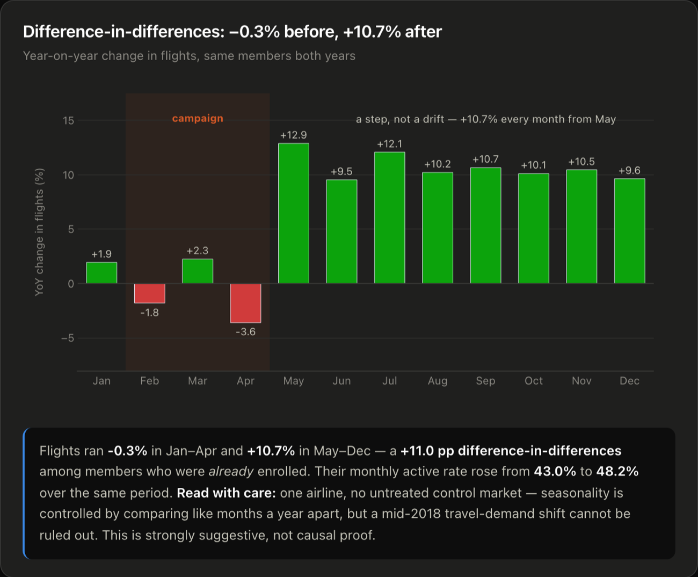

Case study · Campaign measurement
Airline Loyalty Program
A +54% headline was really +40.7% once the trend was accounted for.
- Scale
- 16,737 members · 389,065 member-months
- Role
- Sole analyst — raw extract to dashboard
Context
An airline ran an acquisition campaign for its loyalty programme in February–April 2018. Enrolments for the year came in 54% above 2017, and that is the number that would ordinarily go into the review deck.
But “enrolments were up 54%” and “the campaign produced 54% more members” are different claims, and only the second one justifies running it again. Attributing the whole year-on-year difference to the campaign assumes enrolments would otherwise have been flat — and the programme was already growing, so they would not have been.
The data
[[REPLACE: dataset name and link]] — 16,737 loyalty members expanded into 389,065 member-months, carrying enrolment date, cancellation date, monthly flight activity and customer lifetime value.
One artefact dominates the cancellation data, and it had to be understood before anything downstream could be trusted.

1,048 of 2,067 cancellations — 51% — fall on exactly month 8 of membership, 29× the neighbouring months. A spike that sharp is not a behavioural pattern, it is a contract term expiring: the programme carries an eight-month introductory period and a large share of members leave the moment it lapses.
That changes what the churn series means. A survival curve fitted to this data would be describing a contractual cliff rather than a decay process, and any “average tenure” statistic would be an artefact of the contract length. It is also, as it happens, the highest-leverage retention target in the business — because unlike ordinary churn, the date is known in advance for every single member. In 2018 alone that one moment cost $2.67M of CLV across 325 members.
Approach
Rather than the raw year-on-year comparison, I measured 2018 against a trend-adjusted counterfactual: what the programme would have enrolled on its pre-campaign trajectory, subtracted from what it actually enrolled. That gives +281 incremental members, or +40.7% — a real result, and materially smaller than the +54% headline.
Against a $332 customer acquisition cost and a mean CLV of $8,047, the campaign pays back comfortably even on the conservative figure. That is the point of using the conservative figure: a result that survives the honest comparison does not need the flattering one, and quoting +54% to a finance director who can subtract a trend line costs more credibility than the extra 13 points are worth.
The second question is whether the campaign did anything for members who were already enrolled — who by definition cannot appear in an enrolment count.

Year-on-year flight activity for that group ran −0.3% across January–April and +10.7% across May–December: a +11.0 percentage-point difference-in-differences. Their monthly active rate rose from 43.0% to 48.2% over the same period.
The shape matters as much as the size. It is a step at May, not a gradual climb — which is what a discrete intervention looks like, and not what a slowly improving market looks like.
Why difference-in-differences rather than a before/after. Air travel is strongly seasonal. A straight comparison of May–December against January–April inside 2018 would have measured summer, not the campaign. Differencing against the same months of the prior year removes anything that repeats annually, so what is left is the change specific to 2018 — which is the only part the campaign could have caused.
Result
+281 incremental members (+40.7%), $332 CAC against $8,047 mean CLV, and +11.0pp of flight activity among members who were already enrolled.
The campaign worked, and it worked about three-quarters as well as the raw comparison implied. Both halves of that sentence are the deliverable: the correction is as useful as the number, because it sets the benchmark the next campaign will be judged against — and a benchmark inflated by trend is one that no future campaign can beat honestly.
The month-8 cliff found in the cancellation data is the separate, larger prize. It is a known-in-advance date on every member record, and in 2018 it cost $2.67M of CLV across 325 members. [[REPLACE: what you recommended against the month-8 cliff — a retention contact ahead of the lapse date, a renewal offer, a change to the introductory term itself. One or two concrete sentences.]]
Read with care. One airline, and no untreated control market. Seasonality is controlled by comparing like months a year apart, but a mid-2018 shift in travel demand affecting everyone cannot be ruled out — it would show up in this data as a campaign effect and nothing here could distinguish the two. This is strongly suggestive, not causal proof, and it should be quoted that way.